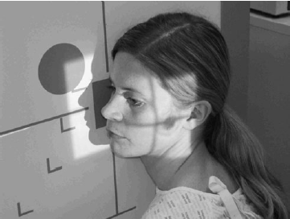

Facial(Lateral)
Centering point:Centre the horizontal central ray to a point 2.5 cm inferior to
the outer canthus of the eye.

Cassette Size:24cm x 30cm (12 x 10 ins)
Potrait
Exposure Factors:70kVp on
16mAs
FFD:100cm
Bucky/Grid:Moving or Stationary Grid
Filter:No
Collimation:Collimate to the area under examination
Pathologies:Fracture, Foreign body, Trauma
Position of patient and cassette
- Erect
- The patient sits facing the vertical Bucky or cassette holder of
the skull unit. The head is rotated, such that the side under
examination is in contact with the Bucky or cassette holder.
- The arm on the same side is extended comfortably by the
trunk, whilst the other arm may be used to grip the Bucky for
stability. The Bucky height is altered, such that its centre is
2.5 cm inferior to the outer canthus of the eye.
- Supine
- The patient lies on the trolley, with the arms extended by the
sides and the median sagittal plane vertical to the trolley top.
- A gridded cassette is supported vertically against the side
under examination, so that the centre of the cassette is 2.5cm
inferior to the outer canthus of the eye.